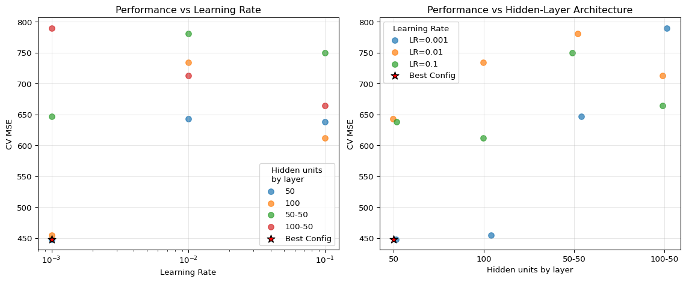
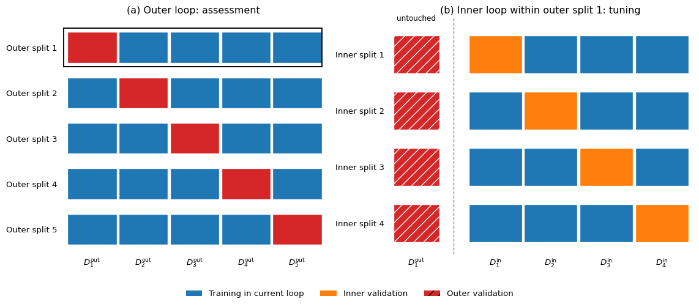

Under active development. A stable version is expected in November 2026. Feedback is welcome by email or via GitHub issues.
2 Cross Validation
2.1 Overview
When building a machine learning model, we face several decisions that affect performance: which algorithm to use, and what values to choose for the tuning constants that govern a model’s flexibility—for instance, the degree of a polynomial regression or the weight on a penalty term added to the loss. Here it is worth fixing terminology: ordinary parameters (such as regression coefficients \beta) minimize the in-sample objective for a given set of tuning constants, whereas hyperparameters (such as the polynomial degree d of this chapter’s running example, the weight on a penalty term, or the number of knots in a spline) index that objective or the fitting algorithm and are chosen by a separate criterion. That criterion is often out of sample, as in this chapter, although in-sample penalized criteria such as the Akaike or Bayesian information criterion can also be used. The shared challenge here is that we cannot evaluate predictive performance on the same data used for fitting—doing so produces optimistic estimates that do not generalize to new observations.
This chapter introduces cross-validation as the principled answer to that challenge. Cross-validation simulates the experience of predicting on unseen data by systematically holding out portions of the training set. The idea dates to Stone (1974) and Geisser (1975), who proposed leave-one-out (holding out one observation at a time) and predictive-sample-reuse procedures for model assessment well before “machine learning” was a separate field. For econometricians, the issues are familiar: overfitting, specification search, and the bias introduced by repeated use of the same data arise in classical model selection just as in machine learning. The econometric analogue of the problem is pretest and specification-search bias; the machine-learning community’s answer to it is nested cross-validation—carrying out model selection on one layer of held-out data while keeping a separate outer layer untouched for the final performance assessment (Varma and Simon 2006; Cawley and Talbot 2010)—an idea we develop at the end of this chapter.
2.2 Roadmap
We illustrate overfitting with a polynomial regression example to motivate why the training mean squared error (MSE) is not a reliable guide to predictive performance.
We introduce a reliable workflow—separating training, validation, and test sets—and explain when each set should be touched.
We define K-fold cross-validation—partitioning the sample into K groups and rotating which group is held out—discuss common choices of K, and explain why letting information from held-out observations slip into the training step typically makes estimated predictive performance look better than it is.
We extend to time-series cross-validation—designs in which the training sample either grows over time or moves forward at a fixed length—and explain why standard K-fold is often invalid for dependent data, and when it can survive.
We close with a practical example of hyperparameter tuning, in which cross-validation selects among candidate model configurations, and then develop nested cross-validation as a two-loop procedure for assessing the entire tuning-and-fitting workflow.
2.3 A Simple Illustration of Overfitting
Our running example throughout this chapter is polynomial regression. The example is deliberately familiar: it isolates overfitting and model selection without introducing new estimation machinery. Richer model classes in later chapters, such as neural networks and tree-based methods, add more choices but do not change the validation logic.
Model and flexibility. Let X_i denote the scalar predictor and Y_i the outcome of unit i, and write x_i and y_i for their observed realizations, following the convention fixed in the information theory chapter. Consider a regression model whose errors are independent and identically distributed (i.i.d.) Gaussian conditional on the predictor:
so that f(x) = \mathbb{E}[Y_i \mid X_i = x] is the conditional mean function at a generic predictor value x. Suppose we approximate f by a polynomial of degree d,
Fitting this polynomial is ordinary least squares (OLS) on an intercept and the constructed regressors x_i,x_i^2,\dots,x_i^d. Each x_i^j is the jth power of the same observed predictor for unit i, not a separate variable. We write \hat{\mu}_d for the fitted polynomial and use \hat f as generic notation for a fitted prediction rule. The degree d is a hyperparameter: increasing it moves the model from rigid to increasingly flexible.
Training objective. Fix a loss functionL(y,\hat y) that measures the cost of predicting \hat y when the outcome is y. Here we use squared loss, L(y,\hat y)=(y-\hat y)^2. For a fitted model \hat f and a sample (x_i,y_i)_{i=1}^N, the empirical risk is the average loss
which under squared loss is the MSE on that sample. Recall from the previous chapter that maximizing a likelihood is equivalent to minimizing the sample average negative log-likelihood. Under Gaussian errors with fixed variance, that objective is, up to an additive constant and a positive scale factor, the training MSE. Thus least squares and maximum likelihood select the same polynomial coefficients.
Evaluating the empirical risk on the data used for fitting gives the training MSE. Because \hat f is chosen to make this quantity small, a sufficiently flexible polynomial can reduce it by following sample noise rather than the conditional mean.
Generalization target. The generalization (prediction) risk is the expected loss on a fresh draw (X,Y) from the same distribution, independent of the data used to fit \hat f:
The conditioning bar holds the fitted rule \hat f fixed; the expectation runs only over the new observation. The training MSE is optimistic for this risk because the same observations helped determine \hat f. By contrast, the test MSE evaluates the fitted rule on observations excluded from estimation and therefore provides an out-of-sample estimate of R(\hat f), with accuracy that depends on the size of the test sample. Cross-validation pursues the same out-of-sample target without committing a large part of the available sample to one validation split. As we explain later, however, K-fold cross-validation targets the risk of a fitting procedure trained on the fold-induced sample size rather than exactly R(\hat f) for the final full-sample fit.
Simulation design. For Figure 2.1, we simulate N=25 training observations and, separately, 200 test observations from the same data-generating process. The test observations are independent fresh draws, not a subset removed from the training sample. We draw the predictor on [-1,1] and interpret y as an economic outcome whose conditional mean varies smoothly but nonlinearly with x, as in an Engel curve or a response of output growth to financial conditions. The left panel compares a rigid linear fit with a flexible degree-12 fit; the right panel plots their underlying training and test criteria across polynomial degrees.
Show the code
import numpy as npimport matplotlib.pyplot as plt# Set random seed for reproducibilitynp.random.seed(42)# Generate data from a nonlinear signal plus Gaussian noisen_train =25n_test =200x_train = np.sort(np.random.uniform(-1, 1, n_train))x_test = np.sort(np.random.uniform(-1, 1, n_test))def f(x):return np.sin(np.pi * x)y_train = f(x_train) + np.random.normal(0, 0.25, n_train)y_test = f(x_test) + np.random.normal(0, 0.25, n_test)x_grid = np.linspace(-1, 1, 400)y_true = f(x_grid)degrees =range(1, 16)train_mse = []test_mse = []for d in degrees: coefs = np.polyfit(x_train, y_train, d) yhat_train = np.polyval(coefs, x_train) yhat_test = np.polyval(coefs, x_test) train_mse.append(np.mean((y_train - yhat_train) **2)) test_mse.append(np.mean((y_test - yhat_test) **2))# Two representative fitscoefs_low = np.polyfit(x_train, y_train, 1)coefs_high = np.polyfit(x_train, y_train, 12)yhat_low = np.polyval(coefs_low, x_grid)yhat_high = np.polyval(coefs_high, x_grid)fig, axes = plt.subplots(1, 2, figsize=(12, 4.8))# Left panel: fitted curvesaxes[0].scatter(x_train, y_train, color='black', s=35, alpha=0.8, label='Training data')axes[0].plot(x_grid, y_true, color='gray', linestyle='--', linewidth=2, label='True mean')axes[0].plot(x_grid, yhat_low, color='C0', linewidth=2, label='Degree 1 fit')axes[0].plot(x_grid, yhat_high, color='C3', linewidth=2, label='Degree 12 fit')axes[0].set_title('Fits on the Training Sample')axes[0].set_xlabel('x')axes[0].set_ylabel('y')axes[0].legend(frameon=False)axes[0].grid(True, alpha=0.3)# Right panel: training vs test MSEaxes[1].plot(list(degrees), train_mse, 'o-', color='C0', label='Training MSE')axes[1].plot(list(degrees), test_mse, 'o-', color='C3', label='Test MSE')axes[1].axvline(12, color='gray', linestyle='--', alpha=0.7)axes[1].set_title('Error vs Model Complexity')axes[1].set_xlabel('Polynomial degree')axes[1].set_ylabel('Mean squared error')axes[1].legend(frameon=False)axes[1].grid(True, alpha=0.3)plt.tight_layout()plt.show()
Figure 2.1: Overfitting in polynomial regression. Left panel: the N=25 training observations (black dots), the true conditional mean (dashed gray), and two least-squares fits—degree 1 (blue) and degree 12 (red). Right panel: training MSE (blue) and test MSE (red) as functions of the polynomial degree, with the dashed vertical line marking degree 12.
The left panel of Figure 2.1 shows the fitted mean functions. The degree-12 polynomial follows local noise in the training sample, while the linear model cannot reproduce the nonlinear signal. The right panel shows the resulting overfitting pattern: as the degree rises, the training MSE falls monotonically, but the test MSE eventually rises. The independent test sample reveals this divergence, but repeatedly using its scores to choose d would turn the test set into a model-selection device rather than a final evaluation sample. This tension motivates the train-test workflow in the next section.
2.4 The Problem with Simple Train-Test Splits
A simple approach is to split our data into a training set and a test set:
Train different models/configurations on the training set
Evaluate their performance on the test set
Choose the best-performing option
If this test set is used exactly once at the very end, it is a legitimate final evaluation device. The problem starts when we also use it to choose the model.
Specifically, relying on a single split has three major drawbacks:
High variance: The estimated performance varies with the random assignment of observations to the two sets, so a single split gives a noisy ranking.
Test set contamination: If we use the test set to make multiple decisions (choose hyperparameters, select the model specification), we are effectively “training” on the test set, leading to overly optimistic performance estimates.
Limited data usage: We are not using all available data for training.
Cross-validation addresses the first and third drawbacks: by averaging over several splits, it reduces the dependence of the estimate on any one arbitrary split, and it lets every observation serve in validation exactly once. Cross-validation does not by itself prevent contamination from repeated model comparison. Selecting among many configurations using the same cross-validated scores reuses those scores just as repeated decisions reuse a test set, which is why the workflow below still separates selection from final assessment.
Reliable Workflow: Validation vs Test Set
The clean workflow is:
Use the training data to fit candidate models.
Compare those candidates and tune hyperparameters on a validation set: data held out from fitting and used only to choose among models. Reuse should nevertheless be limited, because extensive adaptive comparison can overfit the validation set through the selection process even when no model is fitted directly on its observations.
Obtain a final performance assessment either from a test set kept untouched until the very end or from the held-out scores of an outer layer of nested cross-validation, with all model selection and preprocessing repeated inside each outer training sample.
The two approaches serve the same evaluation role but estimate different targets. An untouched test set evaluates the selected model fitted once on the available training data. Nested cross-validation estimates the expected performance of the complete tuning-and-fitting procedure when trained on one outer training sample. It is therefore an alternative source of a final performance estimate, not a literal test set for the model eventually refitted on all observations. For dependent data, the outer partitions must also respect the dependence structure. We define folds and spell out both layers later in the chapter.
2.5 K-Fold Cross-Validation
We now need a systematic way to rotate which observations are held out. Cross-validation serves two related purposes:
Two Uses of Cross-Validation
Performance estimation: Estimate how well a model will perform on unseen data.
Model selection: Choose between different hyperparameters, model specifications, or algorithms based on their cross-validated performance.
Typical choices made this way include the polynomial degree of this chapter’s running example, the weight on a regularization penalty, and—once we reach richer model classes—the many structural and estimation settings of neural networks and tree-based methods in later chapters.
The most common type of cross-validation is K-fold cross-validation. In the form given here it is designed for settings in which the observations can be treated as exchangeable—in particular for independently sampled cross-sectional data without cluster or spatial dependence; Section 2.6 develops the variants appropriate for time series. The procedure is as follows:
Shuffle the dataset randomly.
Split the dataset into K equal-sized groups (or “folds”).
For each fold:
Use the fold as a validation set.
Use the remaining K-1 folds as a training set.
Train the model on the training set and evaluate it on the validation set.
Average the performance scores from the K folds to obtain a single performance estimate.
Formally, write the dataset as \{(x_i,y_i)\}_{i=1}^N, where i indexes observations, x_i denotes all predictor information supplied to the model for observation i, and y_i is the corresponding observed outcome. Thus x_i is the scalar predictor in the polynomial example of Figure 2.1, but it may be a vector of predictors more generally. Let D_k be the index set of the observations in fold k, let |D_k| be its size, and let \hat{f}^{-k} denote the model refit from scratch on all data except fold k—that is, trained only on the K-1 remaining folds, including any data-dependent preprocessing re-estimated on those folds alone. Consequently, \hat f^{-k}(x_i) is the prediction for held-out observation i\in D_k, obtained without using any observation in D_k during fitting or preprocessing. The pooled K-fold cross-validation (CV) estimate of the risk is
When K does not divide N, the folds differ slightly in size and an unweighted average of their means is not exactly the pooled per-observation average; the pooled form above uses weights |D_k|/N on the fold means.
What does \widehat{\mathrm{CV}}_K estimate? With equal folds, each fold model is trained on N(K-1)/K observations. Under the independent sampling assumed here, \widehat{\mathrm{CV}}_K estimates the average out-of-sample risk of the fitting procedure at that training-sample size, where the average is over hypothetical training samples and fresh test observations. It therefore does not estimate exactly the risk R(\hat f) of the particular model refitted on the observed full sample. If prediction risk decreases as the training sample grows, the smaller fold-training samples make CV pessimistic for the full-sample fit, although this direction is not guaranteed for every fitting procedure. Bates, Hastie, and Tibshirani (2024) analyze this distinction formally for OLS and provide broader empirical evidence.
Common Choices for K
A common choice for K is 5 or 10; the extreme case K=N, in which each validation fold contains a single observation, is called leave-one-out cross-validation. A higher K means each fold model is trained on a sample closer in size to the full sample. When prediction risk decreases with training-sample size, this reduces the training-size bias, but it also raises the computational cost. How the variance of \widehat{\mathrm{CV}}_K moves with K has no universal answer: it depends on the stability of the fitting algorithm and on the correlation between fold estimates, and either direction can occur (Arlot and Celisse 2010).
The number of folds K is a design choice, not a hyperparameter of the fitted model: K determines the validation criterion but is not selected by minimizing that same criterion.
Leakage Inside Cross-Validation
Cross-validation only works if each fold is treated like genuinely unseen data. The general principle is:
Inside each fold, every preprocessing or transformation rule used to build features or targets must be a function of the training portion of that fold only. Any rule whose computed value depends on the validation-fold observations contaminates the validation distribution.
Concretely, the following steps must be re-estimated inside each training fold rather than once on the full sample:
scaling and standardization
imputation of missing values
feature selection or dimensionality reduction
target transformations chosen from the data
If these steps are computed on the full dataset before cross-validation, the validation folds share information with the training step. This leakage contaminates the validation experiment and can bias the reported performance estimate, often optimistically; the direction and magnitude depend on the transformation and optimization objective function. Exercise 2.1 below proves a special case for full-sample standardization: the validation observation enters its own scaling rule, which shrinks its standardized magnitude relative to reliable leave-one-out scaling.
Question for Reflection
Suppose lagged excess returns used as predictors are winsorized before K-fold cross-validation. Analyst A clips these predictor values at thresholds fixed ex ante at -5\% and +5\%. Analyst B clips them at the sample’s 1st and 99th percentiles, computed once from the full dataset. Which procedure leaks validation information, and how should the data-dependent procedure be implemented instead?
Suggested Answer
Analyst A does not create leakage, provided the \pm5\% thresholds were genuinely fixed before looking at the sample. Analyst B does create leakage because every validation fold helps determine the full-sample percentiles. To make the second procedure reliable, estimate the 1st and 99th percentiles using only the training portion of each fold, then apply those fitted thresholds unchanged to that fold’s validation predictor values. The relevant distinction is not winsorization itself, but whether its thresholds were learned from held-out data.
Visualizing K-Fold Cross-Validation
The following figure illustrates the K-fold process for K=5 in two equivalent ways. The top panel shows the common implementation in which observations are first shuffled and then assigned to folds. The bottom panel shows the classical schematic in which the sample is partitioned into K contiguous, non-overlapping blocks. In each iteration, one fold is used for validation while the remaining K-1 folds are used for training.
Figure 2.2: Illustration of 5-fold cross-validation over 100 observations. Each row represents one CV iteration, and each horizontal position represents one observation; red segments mark that iteration’s validation fold and blue segments its training folds. Top panel: observations are shuffled before fold assignment. Bottom panel: the same logic as a contiguous partition into five exhaustive and non-overlapping folds.
Reading Figure 2.2 row by row makes the reuse logic concrete: every observation sits in exactly one validation fold and serves as training data in the remaining K-1 splits, so the whole sample contributes to both tasks while no model is ever evaluated on an observation that it saw during training. The two panels differ only in how observations are assigned to folds; the training–validation pattern within each split is identical.
Additional Information: Stratified K-Fold for Classification
For a classification problem, the outcome is categorical—for example, default versus no default. If the classes are imbalanced, meaning that one outcome is rare, ordinary random folds can contain very few or even no observations from that class, making some fold scores erratic or undefined. Stratified K-fold keeps the class proportions in each fold as close to those of the full dataset as the integer fold sizes allow.
2.6 Time Series Cross-Validation
Before discussing time-series validation designs, we need one concept that recurs throughout the book.
Definition: Forecast-Origin Information Set
For a forecast made at time t, the forecast-origin information set\mathcal{F}_t is the \sigma-algebra generated by all variables—outcomes, predictors, metadata—in the form in which they were actually available at real-world time t. For data subject to revision, this means the vintage published by time t: a provisional release available at t belongs to \mathcal{F}_t, while its later revised value does not. A validation design is time-aware if, at each forecast origin t, every predictor entering the forecast and every observation used for estimation is measurable with respect to \mathcal{F}_t. The validation outcome is the subsequently realized target. The outcome is not \mathcal{F}_t-measurable, since it is precisely what the forecast is evaluated against. In a time-series setting, leakage violates this measurability condition: an object on the right-hand side of the forecasting regression depends on information that was not available at t. This is the temporal version of the general leakage principle above. In both cases, a training-side rule depends on held-out information—validation observations in the K-fold setting and post-origin data here. The same concept reappears in the chapters on predictive-distribution evaluation, recurrent networks, hyperparameter optimization, and conformal prediction.
Standard K-fold cross-validation is generally not suitable for time-series data: the argument that each held-out fold mimics genuinely unseen data relies on the observations being exchangeable—as they are under i.i.d. sampling—and temporal dependence breaks exchangeability. Randomly shuffling and splitting time-series data gives some fitted models access to observations after the validation date, so the split no longer reproduces a real-time estimation sample. That mismatch is not automatically biasing: for correctly specified autoregressions with uncorrelated errors, random cross-validation can remain asymptotically valid (Bergmeir, Hyndman, and Koo 2018). It becomes optimistic when a misspecified or flexible model can exploit dependence in post-validation observations, and feature timing or overlapping outcomes can create leakage even when the model itself is correctly specified. Time-aware designs are therefore the safe default.
Specialized cross-validation techniques are needed for time-series data. More generally, the validation split should mirror the dependence structure of the prediction target; Roberts et al. (2017) give a useful taxonomy for temporal, spatial, hierarchical, and related dependence settings.
Econometric Warning
In forecasting applications, leakage can arise even without explicit shuffling. Examples include:
predictors that are revised ex post
features published with delay
overlapping forecast targets
preprocessing performed using information from the full sample
So “time-aware” cross-validation must reflect the actual information set available at the forecast origin.
Serial dependence near fold boundaries is a related but distinct problem. Autocorrelation by itself is not leakage in the sense defined above—it puts no unavailable information into the forecast, and a validation block that lies strictly after the training window remains genuinely unseen even when it is dependent on the training history. What dependence changes is what the validation score measures: observations just after the training window are partly predictable from recently shared shocks, so a design that always validates immediately next to the training data estimates short-horizon performance, and the fold scores are correlated draws rather than independent ones—the validation design must match the intended deployment horizon. Training on observations after the validation block can make the estimate genuinely optimistic when a misspecified or flexible model can exploit the leaked dependence. The correctly specified autoregression with uncorrelated errors discussed above is an important exception: in that setting, post-validation training observations need not bias the cross-validation estimate (Bergmeir, Hyndman, and Koo 2018). A second source of genuine optimism is overlap in labels—the machine-learning term for the outcomes being predicted. If an outcome is constructed from a window of future periods, training observations whose label windows reach into the validation block use information from it. In financial applications one common response is purged cross-validation(Lopez de Prado 2018), which removes training observations whose labels overlap with the validation period, sometimes combined with an embargo period that drops a short buffer after the validation block before training resumes. The exact buffer length is an econometric design choice: it should reflect the forecast horizon, label construction, and persistence in the data.
Expanding Window (Recursive Estimation)
In this approach, the training set grows with each split, and the validation set is always a block of data that comes after the training data.
Start with a small training set.
The next block of data is the validation set.
In the next iteration, the previous validation set is added to the training set, and the subsequent block becomes the new validation set.
This retraining scheme mimics a real-world forecasting workflow in which the model is periodically re-estimated as new data become available.
Sliding Window (Rolling Estimation)
This method uses a fixed-size training set that “slides” through time.
Select a block of data for training.
The next block of data is the validation set.
In the next iteration, both the training and validation windows slide forward by a specified step.
The sliding window is preferred when the data-generating process (DGP) exhibits slow non-stationarity or structural change, so that older observations are less informative about the current conditional distribution—provided the relevance gain outweighs the loss of estimation precision, since a shorter window always raises parameter-estimation variance.
In the econometric forecast-evaluation literature, these are pseudo-out-of-sample (pseudo-OOS) schemes: an expanding training window uses recursive estimation, whereas a fixed-length sliding window uses rolling estimation(West 1996; Clark and McCracken 2013). In both schemes the forecast origin advances through time and the model is re-estimated using only the observations that the chosen window makes available at that origin.
Visualizing Time Series Cross-Validation
The first two panels of Figure 2.3 illustrate expanding- and sliding-window validation. The third panel switches to a two-sided K-fold layout to show where purge and embargo buffers bind when labels overlap.
Figure 2.3: Time-series cross-validation designs over 100 ordered observations. Each row represents one split; blue marks training data, red the validation block, and light gray observations unused in that split. Top: recursive pseudo-out-of-sample evaluation with an expanding training window. Middle: rolling pseudo-out-of-sample evaluation with a fixed-length training window of 30 observations. Bottom: two-sided purged K-fold, with a five-observation purge (purple) immediately before validation and a five-observation embargo (dark gray) immediately after it; both buffers are excluded from the returned training indices.
The contrast between the first two panels of Figure 2.3 is the window-length choice: the expanding window never discards early observations, while the sliding window drops old observations as it moves—the better choice when older data are less informative about current conditions. In both designs the validation block lies strictly after the training data, so no split trains on the future. The third panel addresses a different issue in a two-sided K-fold design. Purple observations are excluded because their multi-period outcomes would overlap the validation block; dark-gray observations are excluded by the post-validation embargo before training resumes. The returned training set contains the blue observations on both sides but neither buffer, so both safeguards are binding. Such a two-sided design is appropriate only when its maintained assumptions justify training on post-validation observations; it does not reproduce a strictly real-time forecast exercise. Purging and embargoing therefore modify a base validation design rather than replace the choice between recursive and rolling estimation.
Scikit-learn’s TimeSeriesSplit implements the expanding window by default; setting its max_train_size argument caps the training window, giving a rolling design once the cap binds. A manual implementation is needed for nonstandard stepping, such as the fixed-length, gapped windows drawn in the middle panel.
2.7 Practical Example: Tuning a Neural Network with Cross-Validation
We now show how to use cross-validation to select hyperparameters for a simple neural network. No knowledge of neural networks is needed here: treat the network as a flexible nonlinear regression model whose fitting procedure comes with two tuning constants—the hidden-layer architecture (which controls how rich the fitted function class is) and the learning rate (a step-size constant of the estimation algorithm). We study these objects properly in the chapter on feed-forward neural networks; in this example the network simply provides a realistic tuning problem with multiple hyperparameters, all tuned using scikit-learn. As data we simulate a single-year cross-section of 1{,}000 firms: annual excess returns, in percent, generated from ten firm characteristics measured on deliberately heterogeneous scales, with an interaction and a quadratic term that a purely linear model would miss. Because the observations are independently simulated—with no cluster, spatial, or time-series dependence—the K-fold design of Section 2.5 is appropriate here. A real firm-year panel would instead require folds that respect firm-level clustering and time.
The architecture labels below report how many computational units (often called neurons) each hidden layer contains. Thus, 50 denotes one hidden layer with 50 units, while 100-50 denotes two hidden layers with 100 and 50 units, in that order. For the present example, these labels simply index model flexibility.
Because the firm characteristics are measured on heterogeneous scales, we standardize them before fitting the network. Scikit-learn’s Pipeline object combines these two ordered steps—standardization followed by model fitting—and treats them as one fitting procedure. Within each CV split, the pipeline estimates the means and standard deviations only from the training fold, fits the network on the standardized training predictors, and applies those same training-fold scaling constants to the validation predictors. The validation observations therefore do not influence standardization.
We also define the fitting procedure honestly as at most 1,000 optimization iterations per fold. Instead of suppressing convergence warnings, the code records how many of the five fold fits reach that cap for every configuration; a capped fit is a valid fixed-budget procedure, but its score can reflect incomplete optimization as well as architecture and learning rate. Within the manual grid-search loop, scikit-learn’s cross_validate function evaluates one fixed pipeline configuration: it refits the pipeline on each of the five training folds and returns the corresponding held-out fold scores. The surrounding ParameterGrid loop repeats this evaluation for every configuration, after which the code selects the configuration with the smallest mean cross-validated MSE. Figure 2.4 summarizes the search: each point is one configuration in the grid, plotted against the learning rate in the left panel and against the architecture in the right panel, with the red star marking the selected configuration. Scikit-learn follows a higher-is-better scoring convention, so neg_mean_squared_error returns the negative of each fold’s MSE; the minus sign in the code converts the average back to ordinary MSE before comparison and plotting.
Show the code
import numpy as npimport matplotlib.pyplot as pltfrom sklearn.neural_network import MLPRegressorfrom sklearn.model_selection import cross_validate, ParameterGrid, KFoldfrom sklearn.exceptions import ConvergenceWarningfrom sklearn.preprocessing import StandardScalerfrom sklearn.pipeline import Pipelineimport pandas as pdimport warningsfrom IPython.display import display# Set random seeds for reproducibilitynp.random.seed(42)# Simulated single-year cross-section: annual excess returns (%) on# 10 firm characteristics with heterogeneous unitsrng = np.random.default_rng(42)n_obs, n_char =1000, 10X_standard = rng.standard_normal((n_obs, n_char))char_scales = np.array([1.0, 50.0, 0.02, 10.0, 0.5,100.0, 2.0, 0.1, 25.0, 5.0])char_locations = np.array([0.0, 100.0, 0.05, 20.0, 1.0,500.0, 0.0, 0.5, 50.0, 10.0])X = char_locations + X_standard * char_scalesbeta = np.array([1.5, -1.0, 0.8, 0.5, -0.5, 0.3, 0.0, 0.0, 0.0, 0.0])y =10.0* ( X_standard @ beta+0.7* X_standard[:, 0] * X_standard[:, 1]+0.5* X_standard[:, 2] **2+ rng.standard_normal(n_obs) *2.0)# Define concise labels: each number gives the units in one hidden layerarchitecture_labels = { (50,): '50', (100,): '100', (50, 50): '50-50', (100, 50): '100-50',}# Define hyperparameter gridparam_grid = {'hidden_layer_sizes': list(architecture_labels),'learning_rate_init': [0.001, 0.01, 0.1],}# Create pipeline with scalingpipeline = Pipeline([ ('scaler', StandardScaler()),# Switch off the coefficient penalty: this example tunes only the# architecture and learning rate. ('mlp', MLPRegressor(max_iter=1000, alpha=0.0, random_state=42))])cv = KFold(n_splits=5, shuffle=True, random_state=0)# Perform grid search with cross-validationresults = []for params in ParameterGrid(param_grid):# Update pipeline parameters pipeline_params = {f'mlp__{key}': value for key, value in params.items()} pipeline.set_params(**pipeline_params)# Perform the same reproducible 5-fold split for every configuration.# Capture convergence warnings and expose them through diagnostics below.with warnings.catch_warnings(record=True) as caught: warnings.simplefilter("always", ConvergenceWarning) cv_result = cross_validate( pipeline, X, y, cv=cv, scoring='neg_mean_squared_error', return_estimator=True, ) cv_scores = cv_result['test_score'] n_capped =sum( estimator.named_steps['mlp'].n_iter_ >=1000for estimator in cv_result['estimator'] ) n_convergence_warnings =sum(issubclass(warning.category, ConvergenceWarning)for warning in caught ) results.append({'architecture': architecture_labels[params['hidden_layer_sizes']],'learning_rate': params['learning_rate_init'],'mean_cv_mse': -cv_scores.mean(),'fold_mse_sd': (-cv_scores).std(ddof=1),'n_capped_folds': n_capped,'n_convergence_warnings': n_convergence_warnings, })# Convert to DataFrame for easier analysisresults_df = pd.DataFrame(results)# Find best configurationbest_idx = results_df['mean_cv_mse'].idxmin()best_config = results_df.iloc[best_idx]print("Best Configuration:")print(f"Hidden units by layer: {best_config['architecture']}")print(f"Learning Rate: {best_config['learning_rate']}")print(f"Mean CV MSE: {best_config['mean_cv_mse']:.4f}")print(f"Fold-score SD (ddof=1): {best_config['fold_mse_sd']:.4f}")print(f"Folds reaching 1,000 iterations: {int(best_config['n_capped_folds'])}/5")print(f"Captured convergence warnings: {int(best_config['n_convergence_warnings'])}")# Visualize resultsfig, (ax1, ax2) = plt.subplots(1, 2, figsize=(12, 5))# Plot 1: Learning rate vs performance (all configurations)for arch_val in results_df['architecture'].unique(): subset = results_df[results_df['architecture'] == arch_val] ax1.scatter(subset['learning_rate'], subset['mean_cv_mse'], label=arch_val, alpha=0.7, s=50)ax1.set_xlabel('Learning Rate')ax1.set_ylabel('CV MSE')ax1.set_title('Performance vs Learning Rate')ax1.set_xscale('log')ax1.grid(True, alpha=0.3)ax1.legend(title='Hidden units\nby layer')# Plot 2: Architecture vs performance (all configurations)# Create a mapping for architectures to x-positionsarch_names = results_df['architecture'].unique()arch_mapping = {arch: i for i, arch inenumerate(arch_names)}results_df['arch_pos'] = results_df['architecture'].map(arch_mapping)# Add small random jitter to x-position for better visibilitynp.random.seed(42)jitter = np.random.normal(0, 0.05, len(results_df))for lr_val in results_df['learning_rate'].unique(): subset = results_df[results_df['learning_rate'] == lr_val] ax2.scatter(subset['arch_pos'] + jitter[subset.index], subset['mean_cv_mse'], label=f'LR={lr_val}', alpha=0.7, s=50)ax2.set_xlabel('Hidden units by layer')ax2.set_ylabel('CV MSE')ax2.set_title('Performance vs Hidden-Layer Architecture')ax2.set_xticks(range(len(arch_names)))ax2.set_xticklabels(arch_names)ax2.grid(True, alpha=0.3)ax2.legend(title='Learning Rate')# Highlight best configurationbest_lr = best_config['learning_rate']best_arch_pos = arch_mapping[best_config['architecture']]best_score = best_config['mean_cv_mse']ax1.scatter([best_lr], [best_score], color='red', s=100, marker='*', edgecolors='black', linewidth=1, label='Best Config', zorder=5)ax2.scatter([best_arch_pos], [best_score], color='red', s=100, marker='*', edgecolors='black', linewidth=1, label='Best Config', zorder=5)# Update legends to include best configax1.legend(title='Hidden units\nby layer')ax2.legend(title='Learning Rate')plt.tight_layout()plt.show()
Best Configuration:
Hidden units by layer: 50
Learning Rate: 0.001
Mean CV MSE: 448.4086
Fold-score SD (ddof=1): 38.5992
Folds reaching 1,000 iterations: 5/5
Captured convergence warnings: 5

Figure 2.4: Cross-validated MSE for every fixed-budget hyperparameter configuration in the grid search. Left panel: mean CV MSE against the learning rate (log scale), with marker color indicating the number of hidden units by layer. Right panel: the same configurations against those architecture labels, with color indicating the learning rate and horizontal jitter added for visibility. For example, 100-50 means two hidden layers with 100 and 50 units. In both panels the red star marks the configuration with the lowest mean CV MSE; the printed diagnostics report how many fold fits reached the 1,000-iteration cap.
The five best-scoring configurations are reported separately in Table 2.1. Its first column uses exactly the same hidden-units-by-layer labels as the right panel of Figure 2.4.
Table 2.1: Five configurations with the lowest mean cross-validated MSE. Hidden units by layer uses the same architecture labels as Figure 2.4; capped folds counts the fold fits that reached the 1,000-iteration limit.
Hidden units by layer
Learning rate
Mean CV MSE
Fold-score SD
Capped folds
50
0.001
448.41
38.60
5
100
0.001
454.40
36.12
5
100
0.1
612.38
52.91
0
50
0.1
637.94
72.81
0
50
0.01
643.34
97.46
4
How to Read the Diagnostics
The mean CV MSE ranks the candidate configurations. The Fold-score SD column—computed in the code as fold_mse_sd with ddof=1—describes how much the K scores fluctuate across folds, but it is not a standard error for the cross-validated risk: the fold scores are correlated because their training sets overlap (Bates, Hastie, and Tibshirani 2024). The Capped folds column provides a separate optimization diagnostic. A positive value means that score differences may reflect incomplete optimization under the fixed iteration budget, not only differences in architecture or learning rate. Small differences in mean CV MSE should therefore not be read as precise rankings, especially when fold-score dispersion is large or the number of capped fits differs.
The grid search above uses a single level of cross-validation. For each fixed configuration, cross_validate produces five validation scores. The ParameterGrid loop repeats that call for every configuration, and the subsequent idxmin step selects the configuration with the smallest mean CV MSE. This entire selection step plays the role of the inner tuning loop in the nested procedure developed next. Using the same splits for every configuration makes their scores directly comparable, but the ranking remains noisy, as the dispersion and convergence diagnostics emphasize. Moreover, the cross-validated score of the selected configuration is optimistically biased, for exactly the reason formalized in Exercise 2.2 below: taking the best of many noisy validation scores favors lucky draws. Section 2.8 develops the separate outer layer needed to assess the tuning procedure without reusing its inner validation scores.
Exhaustive grid search becomes costly as the number of hyperparameters grows. Random and sequential search methods provide alternatives, which we study in the chapter on advanced hyperparameter optimization. Regardless of how the candidates are searched, using the same validation scores for selection and assessment remains a separate problem.
2.8 Nested Cross-Validation
The practical example used cross-validation to answer a selection question: which candidate architecture and learning rate should we choose? Nested cross-validation adds an assessment layer for a second question: how well will the entire selection procedure predict on new data? Reporting the smallest inner-CV error as the answer reuses the same validation scores for both tasks. Because the minimum favors configurations that received unusually favorable validation draws, the reported error is generally optimistic even if each candidate’s CV score is unbiased before selection (Varma and Simon 2006; Cawley and Talbot 2010).
Figure 2.5 visualizes how nested cross-validation prevents that reuse. The left panel shows the outer loop that produces the final assessment scores. The right panel zooms into the first outer split and shows the separate inner loop used for tuning.
Show the code
import matplotlib.pyplot as pltfrom matplotlib.patches import Patch, Rectangleouter_folds =5inner_folds = outer_folds -1row_height =0.68training_color ='tab:blue'outer_validation_color ='tab:red'inner_validation_color ='tab:orange'fig, (ax_outer, ax_inner) = plt.subplots(1, 2, figsize=(12, 5.2), gridspec_kw={'width_ratios': [1.0, 1.15]})# Outer loop: rotate which fold is held out for final assessment.for split inrange(outer_folds):for fold inrange(outer_folds): color = ( outer_validation_color if fold == split else training_color ) ax_outer.add_patch(Rectangle( (fold, split - row_height /2), 0.96, row_height, facecolor=color, edgecolor='white' ))# Outline the outer split expanded in the right panel.ax_outer.add_patch(Rectangle( (-0.08, -row_height /2-0.08), outer_folds +0.04, row_height +0.16, fill=False, edgecolor='black', linewidth=1.4))ax_outer.set_xlim(-0.15, outer_folds +0.05)ax_outer.set_ylim(outer_folds -0.45, -0.65)ax_outer.set_xticks( [fold +0.48for fold inrange(outer_folds)], [fr'$D_{{{fold +1}}}^{{\mathrm{{out}}}}$'for fold inrange(outer_folds)])ax_outer.set_yticks(range(outer_folds), [f'Outer split {split +1}'for split inrange(outer_folds)])ax_outer.set_title('(a) Outer loop: assessment')ax_outer.tick_params(length=0)# Inner loop for outer split 1. The outer validation fold is displayed# separately as a reminder that it never enters tuning.outer_box_x =0.0inner_start_x =1.35for split inrange(inner_folds): ax_inner.add_patch(Rectangle( (outer_box_x, split - row_height /2), 0.82, row_height, facecolor=outer_validation_color, edgecolor='white', hatch='//' ))for fold inrange(inner_folds): color = ( inner_validation_color if fold == split else training_color ) ax_inner.add_patch(Rectangle( (inner_start_x + fold, split - row_height /2),0.96, row_height, facecolor=color, edgecolor='white' ))ax_inner.axvline(1.08, color='0.5', linewidth=1, linestyle='--')ax_inner.text( outer_box_x +0.41, -0.57, 'untouched', ha='center', va='bottom', fontsize=9)ax_inner.set_xlim(-0.12, inner_start_x + inner_folds +0.05)ax_inner.set_ylim(inner_folds -0.45, -0.65)ax_inner.set_xticks( [outer_box_x +0.41]+ [inner_start_x + fold +0.48for fold inrange(inner_folds)], [r'$D_1^{\mathrm{out}}$']+ [fr'$D_{{{fold +1}}}^{{\mathrm{{in}}}}$'for fold inrange(inner_folds)])ax_inner.set_yticks(range(inner_folds), [f'Inner split {split +1}'for split inrange(inner_folds)])ax_inner.set_title('(b) Inner loop within outer split 1: tuning')ax_inner.tick_params(length=0)for ax in (ax_outer, ax_inner):for spine in ax.spines.values(): spine.set_visible(False)legend_handles = [ Patch(facecolor=training_color, label='Training in current loop'), Patch(facecolor=inner_validation_color, label='Inner validation'), Patch(facecolor=outer_validation_color, hatch='//', label='Outer validation'),]fig.legend( handles=legend_handles, loc='lower center', ncol=3, frameon=False, bbox_to_anchor=(0.5, -0.01))fig.tight_layout(rect=[0, 0.08, 1, 1])plt.show()

Figure 2.5: Nested cross-validation with five outer folds and, within outer split 1, four inner folds. Left panel: each outer fold serves once as the outer validation fold (red), while the other folds form the outer training sample (blue). Right panel: the observations in the outer training sample are repartitioned into four inner folds, which rotate between inner training (blue) and inner validation (orange). The outer validation fold remains red and never enters tuning. After the inner loop selects a configuration, the model is refitted on the full outer training sample and evaluated once on the outer validation fold.
The right panel of Figure 2.5 makes the separation operational. The four inner folds rotate between training and validation, but D_1^{\mathrm{out}} never changes role. After the inner scores select \hat\lambda_1, the procedure refits on the complete outer training sample and evaluates once on D_1^{\mathrm{out}}. Repeating the same sequence for the other four outer splits produces one honest outer score for every observation.
Nested cross-validation separates the two questions. Let \Lambda denote the set of candidate hyperparameter configurations. In ordinary nested K-fold CV, the full sample is first partitioned into K_{\mathrm{out}}outer folds. Then:
Hold out outer fold D_k^{\mathrm{out}} and keep it completely untouched while making modeling decisions.
Using only the remaining outer training observations, run an inner cross-validation search over \lambda\in\Lambda. Every data-dependent step—including imputation, standardization, feature selection, and early stopping—must be repeated within the inner training folds.
Select the configuration \hat\lambda_k with the best inner-CV criterion.
Refit the complete pipeline with \hat\lambda_k on all observations in the outer training sample.
Evaluate that fitted pipeline once on D_k^{\mathrm{out}}. Repeat Steps 1–5 for every outer fold and pool the outer-fold losses.
For outer folds that partition the N observations, the resulting estimate is
where \hat f_k^{\mathrm{tuned}} denotes the entire rule produced from outer training sample k: inner-loop preprocessing and tuning, selection of \hat\lambda_k, and refitting with that selected configuration. The outer-fold outcome y_i has no role in constructing this rule. This separation is what makes the outer loss an assessment rather than another tuning criterion.
What does nested CV estimate? It estimates the expected performance of the complete tuning-and-fitting procedure when that procedure is trained on an outer training sample of size approximately N(K_{\mathrm{out}}-1)/K_{\mathrm{out}}. It does not estimate the risk of one prespecified configuration, nor exactly the risk of the final model fitted on all N observations. The selected configurations \hat\lambda_k may legitimately differ across outer folds: the object being evaluated is the rule choose a configuration from the available training data and then refit, not any one value of \lambda.
What happens after assessment? Once the nested estimate has been recorded, rerun the inner tuning procedure on the full development sample, choose a final configuration, and refit the pipeline on all available development observations for deployment. The nested outer score remains the performance estimate for that workflow. Do not replace it with the smaller inner-CV score obtained during the final full-sample search. If a genuinely untouched test set is available, it can instead provide the final assessment, but it must not become another dataset consulted repeatedly during tuning.
What changes with dependent data? Both layers must respect the dependence and information structure described in Section 2.6. For time series, each outer validation block must lie after its outer training window, and every inner split must preserve chronology within that outer training window. For clustered data, clusters rather than individual observations should remain intact in both layers. A time-aware outer loop cannot repair leakage created by random or otherwise invalid inner folds.
Keep the Three Roles Separate
Inner CV selects preprocessing choices, model classes, and hyperparameters.
Outer CV assesses the full procedure that performs that selection and then refits.
The final full-sample refit produces the model used for deployment; it does not produce a new honest performance estimate.
2.9 Summary
Key Takeaways
Cross-validation used for model selection is not by itself an unbiased final assessment; evaluate final performance with either a genuinely untouched test set or a properly separated outer loop of nested cross-validation.
K-fold cross-validation estimates the expected risk of a fitting procedure trained on roughly N(K-1)/K observations; it does not estimate exactly the risk R(\hat{f}) of the one model refit on the full sample.
A validation strategy is reliable only if every data-dependent preprocessing step is recomputed inside each training fold.
Repeatedly choosing the best specification from noisy validation scores creates selection-induced optimism, even when each candidate score is unbiased on its own.
In time-series settings, cross-validation must respect the forecast-origin information set and the publication timing of predictors.
Random K-fold is often inappropriate for dependent data because it can leak future information into the training sample.
Common Pitfalls
Using the test set repeatedly while tuning hyperparameters or architectures.
Reporting the best inner-CV score as the final performance estimate after searching over many configurations.
Allowing an outer validation fold to influence preprocessing, the hyperparameter search, or early stopping.
Standardizing, imputing, or selecting predictors on the full sample before cross-validation.
Treating random K-fold as automatically valid for time-series forecasting problems.
Forgetting that revised or delayed-release predictors may not belong to the real-time information set.
2.10 Exercises
Exercise 2.1: Leakage from Full-Sample Standardization
Consider leave-one-out cross-validation for a scalar predictor x_1,\dots,x_N. Let observation j be the validation observation. Define
Both quantities use the divide-by-own-sample-size convention (ddof=0): the full sample contains N observations, whereas the training fold contains N-1. This is also the convention used by StandardScaler in the chapter’s Python example.
Assume N\ge 3 and that the training-fold observations \{x_i\}_{i\neq j} are not all equal, so that s_{-j}^2>0.
Show that
\bar{x}=\bar{x}_{-j}+\frac{x_j-\bar{x}_{-j}}{N}.
Show that
s^2=\frac{N-1}{N}s_{-j}^2+\frac{N-1}{N^2}(x_j-\bar{x}_{-j})^2.
Let
z_j^{\text{full}}=\frac{x_j-\bar{x}}{s},
\qquad
z_j^{(-j)}=\frac{x_j-\bar{x}_{-j}}{s_{-j}}.
Show that
z_j^{\text{full}}
=
\frac{\sqrt{N-1}\,z_j^{(-j)}}
{\sqrt{N+(z_j^{(-j)})^2}}.
Deduce that
|z_j^{\text{full}}|<|z_j^{(-j)}|
\qquad\text{for every }z_j^{(-j)}\neq 0.
Explain why this shows that full-sample standardization mechanically uses the validation observation to shrink its own standardized magnitude.
Exam level. The point is to show mathematically that preprocessing on the full sample contaminates the validation fold and changes the object being evaluated.
The strict inequality shows mathematically that full-sample standardization is not innocuous: the validation observation enters both the centering and scaling rule, which shrinks its own standardized magnitude. So the validation fold is no longer being evaluated under a preprocessing rule estimated only from the training data.
Exercise 2.2: Why Model Search Creates Optimistic Validation Scores
Suppose two fitted forecasting models, A and B, have the same generalization risk,
where expectations are taken over the validation sample with the fitted rules \hat f_A and \hat f_B held fixed, \eta_A and \eta_B have mean zero, and \mathbb{P}(\eta_A\neq\eta_B)>0, so the two estimates do not coincide with certainty. They need not be independent: candidate models evaluated on the same validation observations will generally have dependent score errors.
The researcher selects the model with the smaller validation estimate.
Show that
\min(\hat{R}_A,\hat{R}_B)
=
R_0+\frac{\eta_A+\eta_B-|\eta_A-\eta_B|}{2}.
Deduce that
\mathbb{E}\big[\min(\hat{R}_A,\hat{R}_B)\big]
=
R_0-\frac{1}{2}\mathbb{E}\big[|\eta_A-\eta_B|\big]
< R_0.
Suppose in addition that (\eta_A,\eta_B) is jointly Gaussian with
\operatorname{Var}(\eta_A)=\operatorname{Var}(\eta_B)=\sigma^2,
\qquad
\operatorname{Corr}(\eta_A,\eta_B)=c<1.
Derive the exact expectation of the selected validation score. Show that it equals
\mathbb{E}\big[\min(\hat{R}_A,\hat{R}_B)\big]
=
R_0-\frac{\sigma\sqrt{1-c}}{\sqrt{\pi}},
and explain why stronger positive dependence between candidate scores reduces the selection-induced optimism. Specialize the result to independent errors.
Now allow the candidates to have unequal risks R_A and R_B, while their validation estimates remain individually unbiased. Use the pointwise inequalities \min(\hat R_A,\hat R_B)\leq \hat R_A and \min(\hat R_A,\hat R_B)\leq \hat R_B to show that
\mathbb E[\min(\hat R_A,\hat R_B)]\leq \min(R_A,R_B).
Explain why exact equality of the candidates’ risks is therefore not required for selection optimism.
An econometrician compares specifications A and B on the same validation sample, selects \hat s\in\arg\min_{s\in\{A,B\}}\hat R_s, and reports \min(\hat R_A,\hat R_B) as the risk of the selected specification. Using Part 4 and R_{\hat s}\geq\min(R_A,R_B), compare the expected reported score with \mathbb E[R_{\hat s}]. Then explain why evaluating the selected specification on an untouched test set, or in the outer loop of nested cross-validation, avoids this selection-induced optimism.
Exam level. The exercise formalizes a central point of the chapter: validation is noisy, and searching across specifications makes the best observed score look too good.
Hint for Part 3
First compute \operatorname{Var}(\eta_A-\eta_B). Under the joint Gaussian assumption, the difference is Gaussian. Use the fact that if Z\sim\mathcal{N}(0,\tau^2), then
\mathbb{E}|Z|=\tau\sqrt{\frac{2}{\pi}}.
Solution
Part 1: Writing the Selected Validation Score
Apply the identity with a=\hat{R}_A and b=\hat{R}_B:
As c increases, the two score errors move together and their difference becomes less variable, so selecting the smaller score extracts less favorable noise. Setting c=0 gives the independent-error result R_0-\sigma/\sqrt{\pi}.
Thus the exact-tie calculation in Parts 1–3 makes the mechanism transparent but is not required for the weak optimism inequality. More precisely, writing x^+:=\max\{x,0\} for the positive part, if R_A\leq R_B, then
The inequality is therefore strict exactly when \mathbb P(\hat R_A>\hat R_B)>0: with positive probability, validation selects candidate B even though A has weakly lower risk.
Part 5: Why Specification Search Creates Bias
Each candidate validation score is unbiased when viewed separately:
The reported minimum validation score is therefore optimistic for the expected risk of the selected specification. An untouched test set avoids this bias because, conditional on the selected fitted rule, its score is computed from fresh observations that played no role in forming \hat s. The outer validation fold in nested cross-validation serves the same role for the full selection procedure.
Exercise 2.3: Feasible and Infeasible Time-Series Forecasts
where |\rho|<1, \beta\neq 0, and \{\xi_t\} and \{U_t\} are mutually independent i.i.d. innovation sequences with mean zero and variances \sigma_\xi^2>0 and \sigma_U^2, respectively. Treat \beta and \rho as known, so the mean squared prediction error (MSPE) quantities below are population quantities net of parameter-estimation error.
Assume the predictor Z_t is published with a one-period delay, so at forecast origin t we observe Z_{t-1} but not Z_t. Consistently with the chapter’s definition, let the forecast-origin information set be generated by the available predictor and outcome histories,
Derive the feasible real-time forecast \hat{y}^{\,\text{rt}}_{t+1\mid t} as a function of Z_{t-1}. Then derive its forecast error and MSPE from the two equations of the data-generating process; do not leave the answer in conditional-expectation form.
Derive the oracle forecast error and its MSPE. Compute the exact MSPE gap between the feasible and oracle rules, and identify the innovation that generates this gap.
A researcher constructs the predictor–outcome pair for forecast origin t using Z_t, even though Z_t is published only at t+1, and evaluates the resulting oracle rule. State precisely which \mathcal{F}_t-measurability condition fails, explain why changing from random to chronological splits does not repair the mis-dated feature, and specify both the feature-timing correction and the split restriction needed for a feasible real-time validation exercise.
Exam level. The exercise formalizes the central econometric issue in time-series cross-validation: the validation design must match the real-time information set.
Hint for Part 1
Use linearity of conditional expectation and the independence of \xi_t and U_{t+1} from \mathcal{F}_t:
where strict positivity follows from \beta\neq0 and \sigma_\xi^2>0. The gap is generated by \xi_t, the innovation in the unavailable current value Z_t. The oracle observes this innovation through Z_t, whereas the feasible forecaster cannot condition on it at origin t.
Part 3: Measurability Failure and Its Correction
The feature Z_t is not \mathcal F_t-measurable. Indeed, Z_t=\rho Z_{t-1}+\xi_t, where Z_{t-1} is \mathcal F_t-measurable but the nondegenerate innovation \xi_t is independent of \mathcal F_t. A protocol that places Z_t in the predictor–outcome pair for origin t therefore evaluates an infeasible forecasting setup and understates achievable real-time MSPE by \beta^2\sigma_\xi^2 in this data-generating process.
Switching from random to chronological splits changes which dated predictor–outcome pairs are used for estimation, but it cannot repair a pair whose feature timing is wrong. The feature-timing correction is to replace Z_t by the value actually observable at origin t, namely Z_{t-1} here. The split correction is to train only on observations available by each forecast origin and validate on a subsequent block, as in an expanding or sliding pseudo-out-of-sample design. Both corrections are necessary: feasible predictors do not excuse future training data, and chronological ordering does not excuse infeasible predictors.
2.11 References
Arlot, Sylvain, and Alain Celisse. 2010. “A Survey of Cross-Validation Procedures for Model Selection.”Statistics Surveys 4: 40–79. https://doi.org/10.1214/09-SS054.
Bates, Stephen, Trevor Hastie, and Robert Tibshirani. 2024. “Cross-Validation: What Does It Estimate and How Well Does It Do It?”Journal of the American Statistical Association 119 (546): 1434–45. https://doi.org/10.1080/01621459.2023.2197686.
Bergmeir, Christoph, Rob J. Hyndman, and Bonsoo Koo. 2018. “A Note on the Validity of Cross-Validation for Evaluating Autoregressive Time Series Prediction.”Computational Statistics & Data Analysis 120: 70–83. https://doi.org/10.1016/j.csda.2017.11.003.
Cawley, Gavin C., and Nicola L. C. Talbot. 2010. “On over-Fitting in Model Selection and Subsequent Selection Bias in Performance Evaluation.”Journal of Machine Learning Research 11: 2079–2107.
Clark, Todd E., and Michael W. McCracken. 2013. “Advances in Forecast Evaluation.” In Handbook of Economic Forecasting, edited by Graham Elliott and Allan Timmermann, 2:1107–201. Elsevier. https://doi.org/10.1016/B978-0-444-62731-5.00020-8.
Geisser, Seymour. 1975. “The Predictive Sample Reuse Method with Applications.”Journal of the American Statistical Association 70 (350): 320–28. https://doi.org/10.1080/01621459.1975.10479865.
Lopez de Prado, Marcos. 2018. Advances in Financial Machine Learning. Hoboken, NJ: Wiley.
Roberts, David R., Volker Bahn, Simone Ciuti, Mark S. Boyce, Jane Elith, Gurutzeta Guillera-Arroita, Severin Hauenstein, et al. 2017. “Cross-Validation Strategies for Data with Temporal, Spatial, Hierarchical, or Phylogenetic Structure.”Ecography 40 (8): 913–29. https://doi.org/10.1111/ecog.02881.
Stone, M. 1974. “Cross-Validatory Choice and Assessment of Statistical Predictions.”Journal of the Royal Statistical Society, Series B 36 (2): 111–47. https://doi.org/10.1111/j.2517-6161.1974.tb00994.x.
Varma, Sudhir, and Richard Simon. 2006. “Bias in Error Estimation When Using Cross-Validation for Model Selection.”BMC Bioinformatics 7: 91. https://doi.org/10.1186/1471-2105-7-91.
West, Kenneth D. 1996. “Asymptotic Inference about Predictive Ability.”Econometrica 64 (5): 1067–84. https://doi.org/10.2307/2171956.